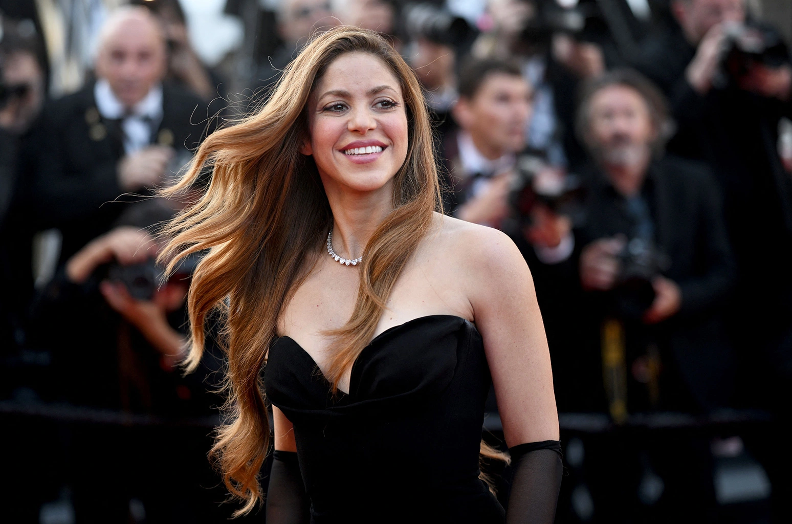
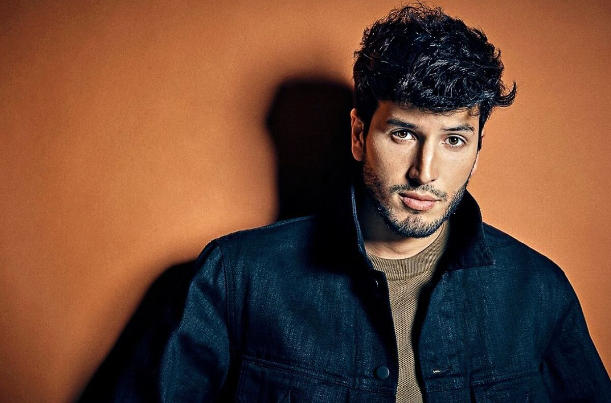

CANTANTES FAMOSOS DE COLOMBIA
1.SHAKIRA
Shakira es quizás la vocalista colombiana más famosa del mundo, y por una buena razón.
Si bien Shakira es de ascendencia libanesa y colombiana (¡y, además, su padre era ciudadano estadounidense!), se ha convertido en un ícono de esta última cultura, siendo la artista femenina con mayores ventas de música latina en la historia.
Nació en Barranquilla, una animada ciudad en la costa caribeña de Colombia, y desarrolló su talento como poeta, cantante y bailarina de danza del vientre aficionada.
Grabó su primer álbum, Magia , a la edad de trece años, y en las cuatro décadas posteriores, se ha convertido en un ícono mundial con canciones que incluyen “ Hips Don’t Lie ”, “ Loca ” y “ Chantaje ”.

2.J.BALVIN
El segundo nombre de nuestra lista es otro de los artistas más aclamados de Colombia. J Balvin nació José Álvaro Osorio Balvín en la metrópolis de Medellín en el departamento central de Antioquia en Colombia.
Creció con la música rock de Metallica y Nirvana y los estilos de reggaeton de Daddy Yankee.
Después de varios años de experimentación con varios estilos musicales en los clubes y calles de Medellín (donde adoptó su nombre artístico), J Balvin encontró el éxito con la canción nominada al Grammy Latino “6 AM”.
Desde entonces, Balvin ha logrado una aclamación aún mayor por temas como “ Ay Vamos ” y “ Mi Gente ”.
3.Juanes
Otra superestrella internacional de Colombia es Juanes , un músico de pop y rock de la ciudad interior de Carolina del Príncipe.
Influenciado por estilos tradicionales colombianos como el vallenato y la música rock de grupos como los Beatles y Metallica, Juanes formó la banda Ekhymosis a finales de los 80.
Aunque Ekhymosis no alcanzó notoriedad internacional, a Juanes le fue mejor en su carrera en solitario: sus dos primeros álbumes, Fíjate Bien y Un Día Normal , le valieron reconocimiento nacional y nueve premios Grammy Latinos.
El éxito de Juanes ha seguido aumentando con el tiempo, con La Vida… Es Un Ratico y Juanes: MTV Unplugged ambos ganando premios Grammy.
4.Carlos Vives
Si bien no es un nombre familiar en todo el mundo como lo son Shakira y J Balvin, Carlos Vives pertenece a esta lista tanto como ellos.
Nacido en Santa Marta, una ciudad cerca del extremo nororiental de la costa caribeña de Colombia, Vives comenzó su carrera como actor de cine y telenovelas.
Fue durante este período que lanzó varios álbumes, pero estos no lograron generar entusiasmo. Su suerte cambió en 1991 cuando asumió el papel del compositor de vallenato Rafael Escalona. En este rol, lanzó dos álbumes de bandas sonoras de telenovelas, lo que le valió el éxito nacional.
Desde entonces, Vives ha continuado su ascenso en popularidad, apareciendo en más de 30 películas y ganando 13 Latin Grammys y 2 Grammys.

5.Fonseca
Fonseca , nacido Juan Fernando Fonseca Carrera, es otro cantante colombiano que ha sabido fusionar hábilmente la música tradicional colombiana con estilos pop.
Fonseca nació y se crió en Bogotá, la capital montañosa de Colombia, y se interesó por la música desde muy joven.
Luego de producir su primer disco amateur a los 13 años, estudió en la prestigiosa universidad colombiana Pontificia Universidad Javeriana y en el renombrado Berklee College of Music en Boston.
Sus dos primeros álbumes, Fonseca y Corazón , le dieron a Fonesca fama nacional e internacional al mezclar el pop latino moderno con géneros tradicionales como el vallenato, la tambora y más.
Desde entonces, Fonseca ha estado nominado a un Grammy y dieciséis Latin Grammy, de los cuales ha ganado cinco.
6.Maluma
Maluma es una de las entradas más jóvenes en esta lista, con solo 28 años, pero si sus colaboraciones con Shakira, The Weeknd y Madonna son una indicación, es una fuerza a tener en cuenta.
Maluma nació Juan Luis Londoño Arias y creció en Retiro, un pueblo en el centro de Colombia. Después de ser descubierto a la edad de quince años, Maluma firmó con Sony Music Colombia y rápidamente produjo varios temas exitosos, incluido el exitoso álbum Pretty Boy, Dirty Boy .
Si tenía alguna duda sobre el éxito internacional de Maluma, todo lo que necesita es echar un vistazo a su larga lista de premios, que asciende a 272 nominaciones y 66 victorias, ¡todo en diez años!
Dada la corta edad de Maluma, estoy seguro de que veremos bastantes premios más en los próximos años.
7.Manuel Turizo
El artista más joven de esta lista es Manuel Turizo , que cumplirá 22 años en poco menos de dos meses. Sin embargo, en su corta carrera, Turizo ya se ha hecho un nombre como músico con influencias del pop, el trap, el vallenato y el R&B.
Nacido y criado en Montería, un pueblo en el extremo oriental de la costa caribeña de Colombia, Turizo ha sido aclamado en toda América Latina por su “ Una Lady Como Tú ”, que se estrenó cuando tenía solo dieciséis años y que ha acumulado más de 200 millones escucha en Spotify.
Su disco Dopamina de 2021 rompió ese récord, sin embargo, en menos de un año, “ Quiereme Mientras Se Pueda ” de Turizo ha recibido 265 millones de escuchas.

8.Karol G
Karol G es una de las superestrellas del género del reggaetón y destaca especialmente como una de las voces femeninas más fuertes del género.
Karol G nació como Carolina Giraldo Navarro en Medellín, Colombia, y ganó fama por primera vez cuando apareció en la versión colombiana del programa de competencia musical X-Factor.
Sin embargo, irrumpió en la corriente principal casi diez años después, cuando lanzó «Ahora Me Llama» en colaboración con la superestrella del pop latino Bad Bunny.
Su carrera se ha disparado desde entonces, con lanzamientos exitosos que incluyen Ocean de 2019 y KG0516 de 2021 . Si sus colaboraciones con Daddy Yankee y Nicki Minaj son una indicación, Karol G no se detendrá en el corto plazo.
9.Kali Uchis
Kali Uchis es la primera entrada en esta lista que no nació en Colombia, pero no está menos conectada con la música colombiana.
Nació Karly-Marina Loaiza en Alexandria, Virginia, en las afueras de Washington, DC, de padre colombiano.
Después de pasar su infancia inmersa en la cultura estadounidense y colombiana, Uchis saltó a la fama con una aparición en el álbum Humanz de Gorillaz de 2015 y su proyecto en solitario de 2018 Isolation .
Su primer álbum en español, Sin Miedo (del Amor y Otros Demonios) , cuyo nombre está inspirado en el nombre de una de las últimas novelas del inmortal autor colombiano Gabriel García Márquez, fue un gran éxito, obtuvo un éxito de crítica y se colocó tanto en la revista Variety y las listas de lo mejor de 2020 de Los Angeles Times .

10.Sebastian Yatra
Otro artista con una crianza mixta colombiana y estadounidense, Sebastián Yatra es un joven cantante que ha alcanzado el éxito con sus canciones sincréticas, que fusionan letras de baladas tradicionales con estilos contemporáneos de reggaeton.
Yatra nació en la capital colombiana de Medellín, pero se mudó a Miami, Florida cuando era niña. Se interesó por la música desde muy joven, incorporando las influencias de Juanes, J Balvin, Ricky Martin y Carlos Vives, con este último colaboraría en 2017.
Su tema principal fue » Traicionera «, una canción que combina elementos de trap, reggaeton y música electrónica de baile.
Desde entonces, ha colaborado con varios músicos de renombre internacional, incluidos Daddy Yankee, Juanes y los Jonas Brothers.
Más recientemente, Yatra ha logrado un éxito meteórico como intérprete de » Dos Oruguitas «, de Encanto de inspiración colombiana de Disney , lo que le valió una nominación al Oscar a la Mejor Canción Original.
